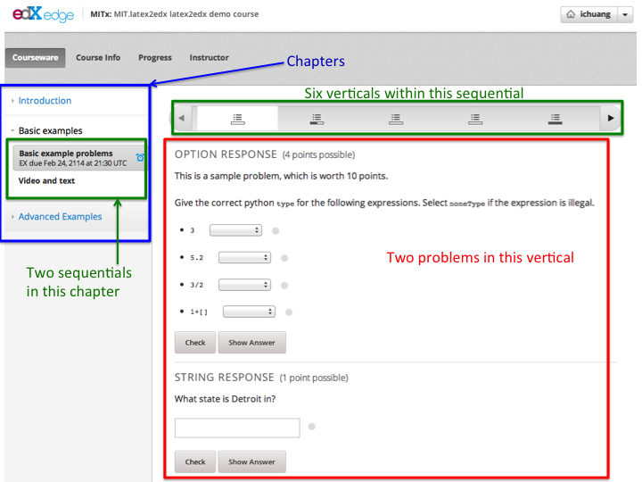
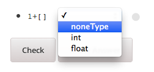
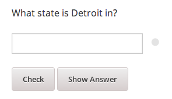
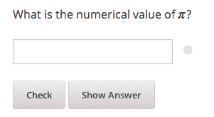
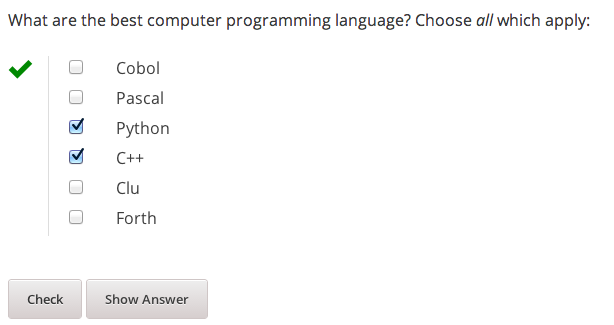
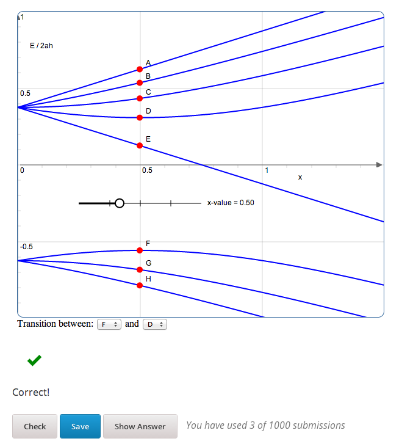

latex2edx TeX Macros¶
latex2edx takes a latex file as input, and generates as output XML files for an edX course. The output may also include JSON files which specify start, end, and due dates for course content.
The edX XML file format is documented separately.
The latex files should employ a special set of TeX macros, to specify the course structure (course, chapter, section, vertical, sequential) and the content elements (video, text, problem, discussion).
Problem elements should also include special macros to specify interactive questions, via “answer boxes,” defined using an “abox” macro. Answer boxes come in many forms, defining e.g. multiple choice, option list, numerical, string, formula, image, javascript, drag-and-drop, and custom response questions.
Some auxilliary macros may also be used, e.g. to define solution text (shown when problems are done), and to indicate inclusion of external XML, or python code. Auxilliary macros also include some used for fine-tuning of layout, e.g. specifying text which is to be inline with answer boxes, and boxes of text which may be optionally shown or hidden.
In the documentation below, macros are specified as being one of two types. Environment macros are used as:
\begin{MacroName}
...
\end{MacroName}
whereas Command macros are used as:
\MacroName{...}
Structural Macros¶
edX courses are structured heirarchically, by chapter, section, then sequential. Each sequential unit may have several Vertical elements within it. In addition, the course itself is defined with certain properties.
These are the structural macros defined for use in latex2edx:
| Macro Name | Type | Arguments |
|---|---|---|
| edXcourse | Environment | { course_number } { display_name } [ attributes ] |
| edXchapter | Environment | { display_name } [ attributes ] |
| edXsection | Environment | { display_name } [ attributes ] |
| edXsequential | Environment | { display_name } [ attributes ] |
| edXvertical | Environment | { display_name } [ attributes ] |
Each of these macros may have optional “attributes” defined, which specify content metadata. Each “attributes” string should be a sequence of key=value separated by spaces. If value has spaces, then it should be quoted (with double-quotes).
Some attributes are special and specific to each macro. The following common attributes may be used with any of these macros:
| Key | Value |
|---|---|
| url_name | Unique database ID key; also used in the XML as the filename prefix |
| start | Start date, specifying when content is made visible to students |
url_name is handy to specify, since it fixes the name of the file which is generated for the element, in the output XML, if the element is a separate file. For example, in the output XML, each chapter is separate file, as generated by latex2edx. Problem, text, and video elements are also each stored as individual XML files in the output XML.
Note that url_name may only contain uppercase and lowercase letters, numbers, and the underbar character (_). It may not contain other characters; in particular, no spaces, dashes, or periods are allowed.
edXcourse¶
This macro defines the course; it is the highest level container, should only be used once within the latex files input to latex2edx.
Example:
\begin{edXcourse}{1.00x}{Introduction to latex2edx}[url_name=2013_Fall showanswer=always start=2014-05-11T12:00]
...
\end{edXcourse}
Each course needs a course number (e.g. 1.00x) and a name (e.g. Introduction to latex2edx).
It is conventional to also specify the url_name for a course, as being the semester in which the course is run.
edXchapter¶
This is the second highest level container element. Each chapter appears in an edX course as a high-level block in the left-hand navigator, when using edX platform to render edX XML.
Example:
\begin{edXchapter}{Unit 2}[start="2013-11-22"]
...
\end{edXchapter}
It is convenient (and often conventional) to think of each chapter as being one week of the course.
Chapters should be within a course.
edXsection¶
Example:
\begin{edXsection}{A second section}[due="2016-11-22 13:30" graded=true]
...
\end{edXsection}
Each section may have specified a “due” attribute; this specifies the date upon which problems within the section are due, i.e. they must be submitted before the due date. The format is “year-month-day hour:minute”.
Each section may also have specified a boolean flag “graded”, which indicates whether problems within the section are to count towards an assignment (an aggregated set of problems) or not.
Sections should be within a chapter.
edXvertical¶
Eample:
\begin{edXvertical}
...
\end{edXvertical}
A vertical element groups a set of one or more text, video, and problem elements together, such that they are displayed as one vertical unit, when using the edX platform to render edX course content.
Content Macros¶
| Macro Name | Type | Arguments |
|---|---|---|
| edXproblem | Environment | { display_name }{ attributes } |
| edXtext | Environment | { display_name } [ attributes ] |
| edXvideo | Command | { display_name } { youtube_id } [ attrib_string ] |
| edXdiscussion | Command | { topic_name } [ attrib_string ] |
edXproblem¶
A problem is the central interactive element of an edX course. It provides a document with interactive questions (specified by edXabox “answer boxes”).
Example:
\begin{edXproblem}{Example problem with hints}{url_name="p1" attempts=10 weight=5}
...
\end{edXproblem}
Note that the attributes for an edXproblem are mandatory. This is because basic metadata about a problem, such as the number of allowed attempts, or the total number of points, need to be defined for an edXproblem.
Because attributes to edXproblem are mandatory, they are specified in curly braces, {}, instead of square braces, as is cannonical elsewhere.
Allowed attributes for edXproblem include:
| Key | Value |
|---|---|
| url_name | Unique database ID key; also used in the XML as the filename prefix |
| attempts | number of allowed attempts (set to zero, for a survey problem) |
| weight | total number of points to award for this problem |
| showanswer | when to show answer, e.g. after due, when corrrect, etc. (see edX docs) |
A problem may be within a sequential or vertical; it cannot be placed directly within a chapter (or unpredictable things may happen).
Complete example:
\begin{edXproblem}{Numerical response}{}
\section{Example of numerical response}
What is the numerical value of $\pi$?
\edXabox{expect="3.14159" type="numerical" tolerance='0.01' }
\end{edXproblem}
edXtext¶
A “text” element is a static HTML page.
Example:
\begin{edXtext}{The Magna Carta}[url_name="magna_carta"]
{\Large The Magna Carta and $\gamma=\sqrt{\alpha+1}$}
...
\end{edXtext}
Note that unlike a problem, text elements do not automatically begin with the display_name shown as a header, in the displayed content (so it goes with edX platform). Thus, it is typical to show titles by hand. This is not unreasonable, as the display_name string cannot contain math, whereas sometimes it is desirable for the header to contain math, e.g. as in the example.
A text element may be within a sequential or vertical, placed in parallel with problem and video.
edXvideo¶
A video element embeds a you-tube video player.
Example:
\edXvideo{A sample video}{u23ZUSu7-HY}[source=test]
A video element may be within a sequential or vertical, placed in parallel with problem and text.
edXdiscussion¶
A discussion element (not used very often) embeds a link to an edX forum discussion topic.
Example:
\edXdiscussion{Discuss this question}{forumid=discuss2}
A discussion element may be within a sequential or vertical, placed in parallel with problem and text.
The Answer Box Macro¶
The answer box macro edXabox is probably the single most important construct within latex2edx, as it defines the central interactive element in an edX course: a question, and how the question is to be graded.
The format of the edXabox macro is simple; it is a command, with a single argument, and no optional arguments:
| Macro Name | Type | Arguments |
|---|---|---|
| edXabox | Command | { arguments_string } |
arguments_string is a space delimited set of key=value definitions. The most important key is type, which specifies the type of answer box:
| Key | Value | Description |
|---|---|---|
| type | option string multichoice numerical formula custom jsinput image | Option response question String response question Multiple choice input question Numerical response question Formula response question Custom response question Javascript input response question Image response question |
Each of these problem types is documented by edX; here, specific issues relating to latex2edx are documented.
Option response problem¶
Option response provides a menu of choices:
These are specified by the following key, value pairs:
| Key | Description of value |
|---|---|
| options | comma delimited set of double-quoted strings |
| expect | the “correct” answer: one of the double-quoted option strings |
| inline | 1: display input box inline (default is not inline, i.e. block display) |
Example input:
\edXabox{type="option" expect="int" options="noneType","int","float"}
Output XML:
<optionresponse>
<optioninput options="('noneType','int','float')" correct="int"/>
</optionresponse>
String response problem¶
String response questions ask for text input:
These are specified by the following key, value pairs:
| Key | Description of value |
|---|---|
| options | “ci”: case-insensitive grading, “regexp”: expect is a regular expression |
| expect | a string giving the “correct” answer |
| size | width of the input box displayed |
| inline | 1: display input box inline (default is not inline, i.e. block display) |
Example input:
\edXabox{type="string" expect="Michigan" size="20" options="ci regexp"}
Output XML:
<stringresponse answer="Michigan" type="ci regexp">
<textline size="20"/>
</stringresponse>
Numerical response problem¶
Numerical response questions ask for a number, and are graded with a specified input value tolerance:
These are specified by the following key, value pairs:
| Key | Description of value |
|---|---|
| tolerance | tolerance for accepting answer, as percentage or as absolute number |
| expect | a double-quoted string giving the numerically “correct” answer |
| size | width of the input box displayed |
| inline | 1: display input box inline (default is not inline, i.e. block display) |
Example input:
\edXabox{expect="3.14159" type="numerical" tolerance="0.01" inline=1}
Output XML:
<numericalresponse inline="1" answer="3.14159">
<textline inline="1">
<responseparam type="tolerance" default="0.01"/>
</textline>
</numericalresponse>
Formula response problem¶
Formula response questions ask for a symbolic math formula as input. The formula is graded using random numerical sampling. Only a pre-specified set of variables is allowed. The instructor must specify the allowed varaiables, the numerical sampling ranges for each variable, and the number of random samples to take.
These are specified by the following key, value pairs:
| Key | Description of value |
|---|---|
| expect | a double-quoted string giving the “correct” answer |
| samples | a double-quoted string specifying variables and sampling ranges |
| math | 1: display mathjax rendering of formula below the input box |
| tolerance | tolerance to use in testing numerical samples for equality |
| size | width of the input box displayed |
| inline | 1: display input box inline (default is not inline, i.e. block display) |
| feqin | 1: use formulaequationinput instead of textline |
The samples attribute is a string which should have this format:
<variables>@<lower_bounds>:<upper_bound>#<num_samples
where:
variables - a set of variables that are allowed as student input
- lower_bounds - for every variable defined in variables, a lower
bound on the numerical tests to use for that variable
- upper_bounds - for every variable defined in variables, an upper
bound on the numerical tests to use for that variable
If feqin is set, then a more sophisticated input element is used (rather than a simple text input line). This “formulaequation input” element uses the server to provide somewhat real-time syntax checking of the input string, so that the student is told whether the input is syntatically legal or not, up to the current point of input.
The formulaequation input method has advantages and disadvantages.
Advantages include the fact that feedback is given freely, without having to consume a problem “check”.
Disadvantages include the fact that the feedback is slow (it needs a round-trip to the server); also, partially entered equations are marked as syntatically incorrect, and partial input is not displayed.
Example input:
\edXabox{expect="(-b + sqrt(b^2-4*a*c))/(2*a)" type="formula"
samples="a,b,c@1,16,1:3,20,3#50" size="60" tolerance='0.01' inline='1'
math="1" feqin="1" }%
Output XML:
<formularesponse inline="1" type="cs" samples="a,b,c@1,16,1:3,20,3#50" answer="(-b + sqrt(b^2-4*a*c))/(2*a)">
<formulaequationinput size="60" inline="1" math="1">
<responseparam type="tolerance" default="0.01"/>
</formulaequationinput>
</formularesponse>
Multiple choice problem¶
A multiple choice problem presents a list of choices for the student, and asks the student to select one or more of the choices.
These are specified by the following key, value pairs:
| Key | Description of value |
|---|---|
| expect | a double-quoted string giving the “correct” answer, or a list of such |
| options | a comma-delimited list of double-quoted strings |
If the value for expect is a single double-quoted string, then the question is a single-choice problem.
If the value for expect is a comma-delimited list of more than one double-quoted string, then the question is a multiple-choice problem.
Example input:
\edXabox{type="multichoice"
expect="Python","C++"
options="Cobol","Pascal","Python","C++","Clu","Forth"
}
Output XML:
<choiceresponse>
<checkboxgroup direction="vertical">
<choice correct="false" name="1">
<text> Cobol</text>
</choice>
<choice correct="false" name="2">
<text> Pascal</text>
</choice>
<choice correct="true" name="3">
<text> Python</text>
</choice>
<choice correct="true" name="4">
<text> C++</text>
</choice>
<choice correct="false" name="5">
<text> Clu</text>
</choice>
<choice correct="false" name="6">
<text> Forth</text>
</choice>
</checkboxgroup>
</choiceresponse>
Custom response problem¶
Custom response problems accept text input (which may be formulas, or other kind of strings), and grades the input using a custom python script. This is a very sophisticated and powerful means of evaluating student responses, because it can test one or more inputs for various properties.

For example, a custom response problem can ask students to enter two numbers which sum to 10. Or it could ask students to enter the specification for an electrical circuit with a certain desired property. Or it could ask students to enter a musical phrase with a certain deisred motif.
The response can then be evaluated by testing for the property; this allows the student’s response to include answers outside of the explicit examples constructed by the instructor.
Custom response problems are specified by the following key, value pairs:
| Key | Description of value |
|---|---|
| expect | a double-quoted string giving the “correct” answer, when appropriate |
| cfn | name of the python function to use as the “check” function |
| prompts | comma-delimited list of double-quoted strings specifying prompts |
| answers | comma-delimited list of double-quoted strings specifying answers |
| options | a comma-delimited list of double-quoted strings |
| math | 1: display mathjax rendering of formula below the input box |
| size | width of the input box displayed |
| inline | 1: display input box inline (default is not inline, i.e. block display) |
prompts and answers are only used in multiple-input-box problems. When used, the number of input boxes corresponds to the number of prompts (and should be equal to the number of answers).
A custom response problem requires a python script, which checks the answer for correctness. This python script may be specified in an edXscript environment, as illustrated in this example:
Example input:
\begin{edXscript}
def sumtest(expect,ans):
try:
(a1,a2) = map(float,ans)
return (a1+a2)==10
except Exception as err:
return {'ok': False, 'msg': 'Sorry, cannot evaluate your input ' + str(ans)}
\end{edXscript}
\edXabox{expect=""
type="custom"
answers="1,9"
prompts="x = ","y = "
cfn="sumtest"
inline="1"
}
Output XML:
<script type="text/python" system_path="python_lib">
def sumtest(expect,ans):
try:
(a1,a2) = map(float,ans)
return (a1+a2)==10
except Exception as err:
return {'ok': False, 'msg': 'Sorry, cannot evaluate your input ' + str(ans)}
</script>
<customresponse cfn="sumtest" inline="1" expect="">
<p style="display:inline">x =<textline correct_answer="1" inline="1"/></p>
<br/>
<p style="display:inline">y =<textline correct_answer="9" inline="1"/></p>
</customresponse>
Javascript response problem¶
Javascript input (jsinput) problems are perhaps the most sophisticated assessment problem type available within the edX problem. They combine the use of javascript (executed in the user’s browser) to provide a nearly arbitrary user input experience, with python grading (executed on the edX-platform server) to evaluate correctness of the response.
This is a powerful way to allow graphical input to be graded. For example, javascript widgets like sliders and graphs can be used as input. Or the input could be hot spots embedded within a three-dimensional WebGL rendered multiplayer game.
For details about this problem type, see the jsinput documentation by edX.
Javascript input response problems are specified by all the usual key, value pairs for custom response problems, and in addition several needed to specify the javascript interface:
| Key | Description of value |
|---|---|
| expect | a double-quoted string giving the “correct” answer, when appropriate |
| cfn | name of the python function to use as the “check” function |
| options | a comma-delimited list of double-quoted strings |
| width | width of the iframe window used for display of the problem |
| height | height of the iframe window used for display of the problem |
| gradefn | name of the javascript function used to get the grading input |
| get_statefn | name of the javascript function used to get the js problem state |
| set_statefn | name of the javascript function used to set the js problem state |
| html_file | name of the HTML file with the javascript, to be displayed in the iframe |
Example input (suppressing the python function):
\edXabox{expect="" type="jsinput" cfn="check_find_dep"
width="650"
height="555"
gradefn="getinput"
get_statefn="getstate"
set_statefn="setstate"
html_file="/static/html/ps3plot_btran1.html"
}
Output XML:
<customresponse cfn="test_findep" expect="">
<jsinput width="650" height="555" gradefn="getinput" get_statefn="getstate" set_statefn="setstate" html_file="/static/html/ps3plot_btran1.html"/>
</customresponse>
Auxilliary Macros¶
latex2edx also provides a number of important macros which are not structural, main content elements, or answer boxes. These auxilliary macros allow specification of solutions and definition of scripts, among other things.
Here is a list of the auxilliary macros:
| Macro Name | Type | Arguments |
|---|---|---|
| edXsolution | Environment | None |
| edXscript | Environment | None |
| edXshowhide | Environment | { id }{ description } |
| edXgitlink | Command | { git_url_root } { Label } |
| edXinline | Command | { text } |
| edXinclude | Command | { filename } |
| edXincludepy | Command | { filename } |
| edXaskta | Command | { arguments } |
| edXbr | Command | None |
edXsolution¶
Example:
\begin{edXsolution}
For the stretched states the formula is unnecessary: all the angular momenta are
then aligned with each other and their magnetic moments just add.
\end{edXsolution}
edXscript¶
This defines a python script. The syntax of the python script will be checked by latex2edx. If there is a syntax error, then latex2edx will abort compilation.
Python scripts can be used within problems for randomization. The python script is executed once before the problem is displayed, with text preceeded by a dollar sign being substituted with values defined in the global scope of the python script.
Functions defined in the python script can then be called later, when evaluating student responses, e.g. using custom and jsinput response answer boxes.
Example:
\begin{edXscript}
def sumtest(expect,ans):
try:
(a1,a2) = map(float,ans)
return (a1+a2)==10
except Exception as err:
return {'ok': False, 'msg': 'Sorry, cannot evaluate your input ' + str(ans)}
\end{edXscript}
edXinclude¶
This macro causes the specified XML file to be included at the point where the macro is located. This is useful for including drag-and-drop problems, e.g. created using latex2dnd.
Example:
\edXinclude{XML/ps3_p2f3_dnd.xml}
edXincludepy¶
This macro causes the specified python script to be imported. The syntax of the imported python script is checked, just as is done for edXscript.
Example:
\edXincludepy{python_lib/sympy_check.py}
edXinline¶
This forces the text in the argument to be placed inline with the subsequent answer box.
Example:
\begin{itemize}
\item \edXinline{\tt 3~~~} \edXabox{expect="int" options="noneType","int","float" type="option" inline="1"}
\item \edXinline{\tt 5.2~~~} \edXabox{expect="float" options="noneType","int","float" type="option" inline="1"}
\end{itemize}
edXaskta¶
Inserts an “Ask TA!” button, which, when clicked, brings up a “mailto:” window. The mail is addressed to the TA’s specified by the macro, and the subject specifies the name of the problem in which the button is located. The body of the message is also pre-populated with a direct link to the problem.
This command should be used once near the top of the latex file, to setup the names of the TA’s to whom to send the email, e.g.:
\edXaskta{settings=1 to=course_TAs@mit.edu cc=instructor@mit.edu}
Put this, for example, inside an edXtext environment. This form of the macro does not produce a button.
Locate the actual AskTA! buttons using this syntax:
\edXaskta{}
typically right before \end{edXproblem}.
edXgitlink¶
Use this macro to place a piece of text hyperlinked to the specific source line in the latex source file. This works assuming your latex source is located on a website. For example, if the source tex is stored on github, then use something like this example:
\def\giturl{https://github.com/mitocw/content-mit-latex2edx-demo/blob/master/src}
\edXgitlink{\giturl}{Source TeX}